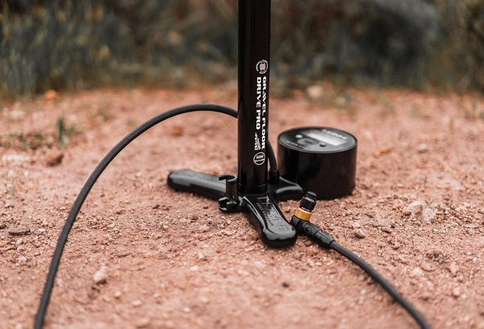
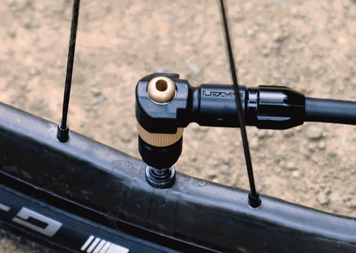
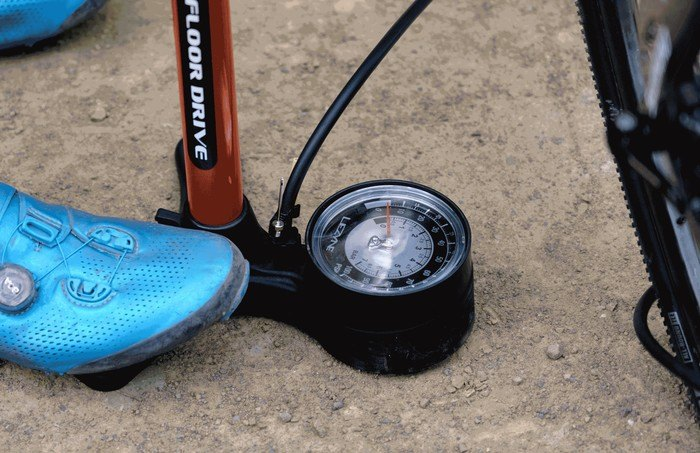
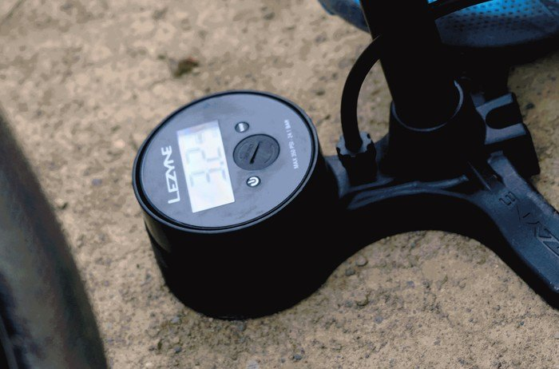

Всё о велосипедах
Происки маркетологов? Из гравийного не хватало только насосов, всё остальное уже есть. Примерно такая реакция на новость становится первой, но стоит вчитаться в содержание и все не так уже и однозначно.
Новая линейка насосов Lezyne представлена тремя моделями: Sport Gravel Floor Drive (65$), Gravel Floor Drive (80$) и Gravel Digital Drive Pro (100$). Суть гравийности заключается в большем поршне, работа которого оптимизирована под давления до 6,8 атмосфер (100 psi), что вполне приемлемо сугубо для гравийных колес.
Подавляющее большинство насосов предполагают универсальное применение, что означает достижение максимального давления в 10,8 атмосфер (такие давления требуют шоссейные колеса). Для того, чтобы такое давление достичь с приемлемым уровнем усилий на рукоятке, применяется поршень определенного размера. Для примера допустим, что стандартный поршень стандартного напольного насоса имеет диаметр 2 см. Тогда на ручке будет достигаться усилие, например в 20 кг при достижении максимального давления в 11 атмосфер. Теперь мы увеличиваем диаметр поршня до 3-х см, усилие на ручке при давлении 11 атмосфер достигнет уже 30 кг. Нам 11 атмосфер не нужно, поэтому приемлемый уровень в 20 кг мы обнаружим на отметке 8 атмосфер. Какие преимущества мы получаем? Всё просто, качать колеса до необходимого давления таким насосом получится быстрее. Поршень увеличился, а значит и увеличился объем воздуха, который мы закачиваем за одну итерацию. Профит.
Обратная ситуация с “насосами для МТБ” велосипедов, где качать сложно уже при достижении давления 3 атмосферы. Поршень в таком насосе большой, чтобы объемная покрышка накачивалась быстрее. Для справки – пример с МТБ насосами приведен ради примера. Хотя нельзя отрицать вероятности появления таковых на рынке в ближайшем будущем.
Теперь суть новой линейки насосов Lezyne становится понятной. Все три насоса оснащены специальным переходником для ниппеля Presta. Он призван упростить накачивание бескамерных покрышек и обеспечивает большую проходимость воздуха за счет возможности работать с извлеченным клапаном.
Самая доступная модель оснащается аналоговым манометром диаметром 3,5”. Две старших модели несут на себе цифровые манометры с ценой деления в 0,1 атмосферы. Две более доступных модели оборудованы усиленной пластиковой стойкой. Топовая модель полностью выполняется из алюминия, и только ручка сделана из древесины.
